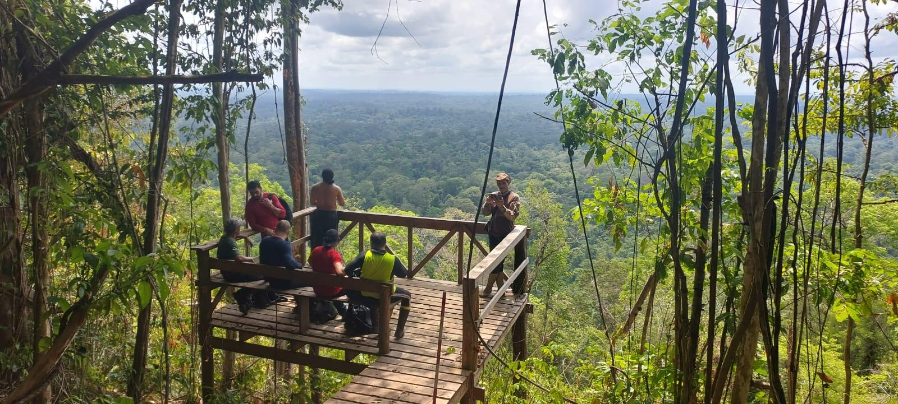

Árvores gigantes da Amazônia
Estudo da ocorrência, estrutura, dinâmica, biomassa e conservação de árvores excepcionais em florestas amazônicas.
Ciências Florestais • Biometria Florestal • Ecologia Espacial • Programação Científica em R
Professor Adjunto da Universidade do Estado do Amapá (UEAP) e pesquisador em Ciências Florestais, com atuação em biometria florestal, mensuração florestal, ecologia espacial, ecologia de florestas tropicais, árvores gigantes da Amazônia, modelagem de distribuição de espécies, programação científica em R e aplicações de inteligência artificial voltadas à análise de dados ecológicos e florestais. Atualmente desenvolve pesquisas que integram inventário florestal, modelagem espacial, sensoriamento remoto e ciência de dados para compreender a estrutura, dinâmica e conservação das florestas amazônicas.
Este portal reúne informações sobre minha trajetória acadêmica, projetos de pesquisa, disciplinas, palestras, aplicativos Shiny, publicações científicas, orientações e materiais associados à formação de estudantes e ao avanço do conhecimento em Ciências Florestais.
Minha atuação integra inventários florestais, biometria, ecologia espacial, modelagem estatística, programação científica em R e sensoriamento remoto para investigar padrões ecológicos, estrutura florestal, biodiversidade e conservação das florestas tropicais. O portal também reúne materiais didáticos, projetos de pesquisa, aplicações computacionais e recursos desenvolvidos para apoiar a formação de estudantes e pesquisadores.
Formação, trajetória, áreas de atuação e colaborações científicas.
Pesquisas sobre árvores gigantes, Amazônia, biometria florestal, manejo, biodiversidade e ecologia espacial.
Materiais de ensino, ementas, conteúdos, exercícios e scripts em R.
Conferências, minicursos, aulas públicas, eventos científicos e apresentações.
Aplicativos interativos para análise florestal, modelagem e ensino.
Artigos científicos, capítulos, preprints, relatórios e produção técnica.
Projetos de IC, TCC, mestrado, coorientações e formação de estudantes.
Editais, agências de fomento, projetos financiados, bolsas e apoio institucional à pesquisa.
Currículo resumido, Lattes, ORCID, Google Scholar e informações acadêmicas.
Estudo da ocorrência, estrutura, dinâmica, biomassa e conservação de árvores excepcionais em florestas amazônicas.
Uso de dados espaciais, imagens orbitais, drones e ferramentas de geoprocessamento para analisar padrões ecológicos, estrutura da paisagem, biodiversidade e conservação de florestas tropicais.
Modelagem de crescimento, estrutura diamétrica, volume, biomassa, produtividade e dinâmica de florestas naturais e plantadas.
Análise de padrões espaciais da biodiversidade, estrutura da vegetação e processos ecológicos em diferentes escalas.
Ecologia, monitoramento, diversidade, distribuição e conservação das maiores árvores das florestas amazônicas.
Desenvolvimento de métodos, scripts, aplicações e modelos estatísticos para análise de dados florestais e ecológicos utilizando R.
Desenvolvimento de materiais, scripts e aplicações em R para modelagem de distribuição de espécies, biodiversidade e mudanças climáticas.



Este site está em desenvolvimento contínuo e será atualizado com projetos, publicações, materiais didáticos, aplicativos e oportunidades de colaboração.